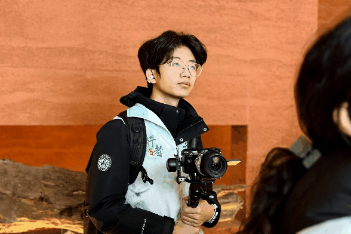
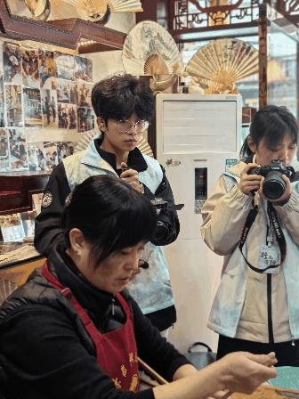
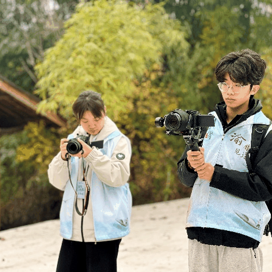
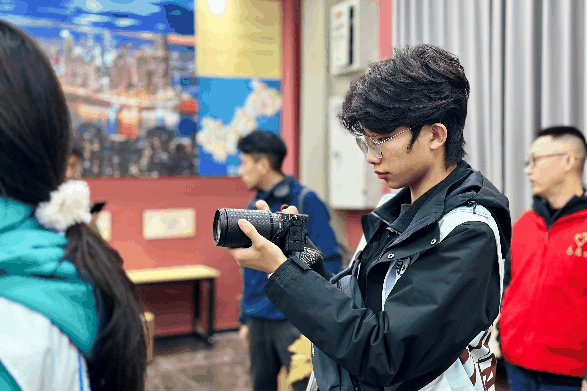
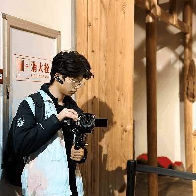
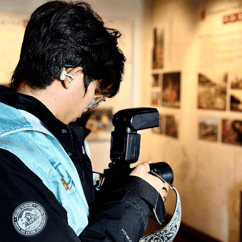
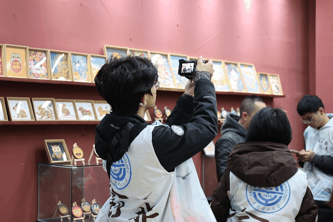

【行者无疆·渝见非遗】个人实践感悟——梁棋鑫


在接连数日的巴渝非遗探访与实践之旅中，我先后走进夏布博物馆、荣昌陶博物馆、川剧博物馆、三峡博物馆等众多博物馆以及非遗体验中心，从指尖触摸千年织物的肌理，到亲手捏塑泥土成器；从聆听川剧高腔的婉转余韵，到品读三峡文明的浩荡史诗，一场场沉浸式体验，让我跳出书本与影像，真正走进了非遗的烟火与风骨之中，也对传统文化的传承、坚守与新生，有了最为真切、深刻的体悟。

非遗从不是陈列在玻璃柜中冰冷的展品，而是流淌着岁月温度、承载着民族智慧的活态文化。在夏布博物馆，我看见一根苎麻历经近百道纯手工工序，织就出被誉为“天然纤维之王”的夏布，从《诗经》里的远古印记，到汉唐贡品、清代外销品，千年时光凝结在经纬之间，织机、麻纱、老工艺复原场景，无一不在诉说着传统手艺人的极致匠心。荣昌陶的千年窑火更让我动容，汉代陶俑的古朴、明清茶具的精巧，“薄如纸、亮如镜、声如磬”的独特神韵，藏着一代代匠人对选料、制泥、烧制每一道工序的坚守。而川剧博物馆里的戏服、脸谱与高腔，三峡博物馆中山河与人文交织的文明脉络，非遗母城博物馆里的老物件与民俗记忆，都让我明白，非遗是巴渝大地的文化根脉，是先民们在岁月中沉淀的生活美学、精神信仰与生存智慧，它扎根烟火，又超越日常，成为刻在地域血脉里的文化标识。




实践的意义，更在于从“观看者”变为“参与者”，亲手触碰非遗的鲜活生命力。在荣昌，我跟随陶艺名家揉泥、拉坯、塑形，感受陶泥的温润与倔强，在一次次失败与调整中，读懂陶艺创作需要的专注、耐心与对泥土的敬畏；在非遗体验馆，我调香、剪纸，让草木芬芳与红纸巧思在指尖绽放，真切体会到传统技艺并非遥不可及，而是可以融入当代生活的美好创造。这些亲手实践的瞬间，让我摆脱了对非遗“陈旧、小众、过时”的刻板印象，也懂得了非遗的传承从不是简单的复刻，而是用心感受、用手践行，在触摸与创造中，接住匠人传递的薪火。



行走间，我既沉醉于非遗的千年底蕴，也清晰看见传统技艺在时代浪潮下面临的现实困境：夏布手工织造效率低、成本高，市场被现代工业挤压；诸多传统手艺面临传承人断层、创新不足、与当代生活脱节的难题。但欣喜的是，我也在展厅与实践中看到了破局的希望：夏布走进文创与时装设计，荣昌陶在坚守古法中创新表达，川剧、传统手工艺以体验、研学、文创等形式贴近年轻人，古老技艺正以全新的姿态拥抱时代。这让我深刻意识到，非遗的传承不是固守过往，而是在坚守核心技艺与文化内核的基础上，主动适配当代生活、对接年轻审美，让传统与现代相融，让老手艺拥有新生命。

数日的非遗之旅，是一场文化寻根，更是一次精神洗礼。我见过千年技艺的厚重与璀璨，感受过匠人坚守的执着与热爱，体验过亲手创造的欢喜与感动，更明白了非遗传承的紧迫性与重要性。非遗从来不是尘封的历史，而是活着的文化；它不属于过去，而属于当下与未来。作为新时代的青年，我们既是非遗文化的见证者、感受者，更应成为传承者、传播者，以敬畏之心守护传统根脉，以创新之力激活古老技艺，让巴渝非遗、中华非遗在时光中薪火相传、生生不息，让匠心与文化，永远鲜活、永远闪耀。
行者无疆
来源 | 行者无疆实践团
文字 | 梁棋鑫
图片 | 行者无疆实践团
编辑 | 冯语城
审核 | 刘辰锡
责编 | 邹靓靓 周 亮